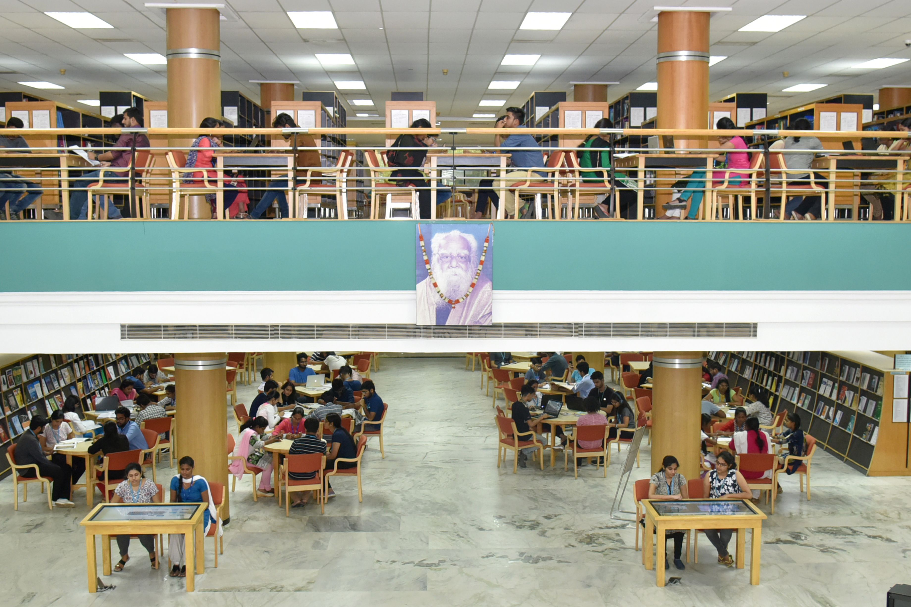
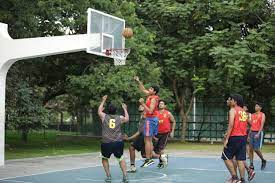
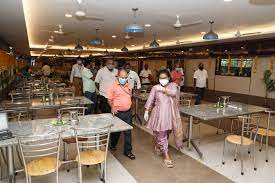

World-class Library
The Central library spreads over an area of 7770 sq m with six
floors (Excluding ground floor). It has specialized collections of
books, journals & other resources in Mathematics & Sciences,
Engineering and Technology, Biotechnology, Humanities, Social
Sciences and Management ranging from printed books, e-books, back
volumes and CDs\DVDs. The Central Library subscribes to national and
international journals in print and e-Journals.

Basketball Court
At VIT students are groomed to be complete personalities. In order
to be mentally and physically fit, VIT provides state of the art
facilities with many play grounds, stadium, indoor courts as well as
a number of centres for physical education & sporting activities
that help students stay as fit as a fiddle and to develop a spirit
of sportsmanship. In order to encourage the students in sports
activities the Department of Physical Education conducts Intramural
tournament in various sports and games for Men and Women separately.
VIT thus has several basketball courts meeting international
standards.

Tasty and Healthy Food
Healthy, wholesome food and a variety of dining options are
available to the hostel students. Given the great diversity of
tastes and cultures, students have access to multi-cuisine catering
services that serves vegetarian, non-vegetarian, Indian and
International food. Students can also choose and order from a
limited list of special dishes available on prior registration at
the Restaurant-style Mess. The kitchens are hygienically operated
and adhere to the prescribed food standards. A balanced menu is
prepared every month by the Student Mess and Menu Committee in
consultation with the hostel administrators.